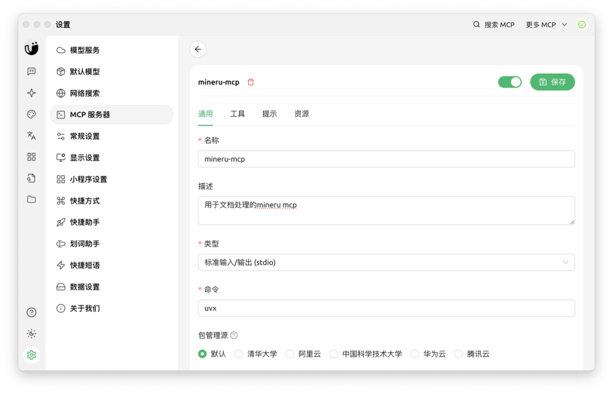
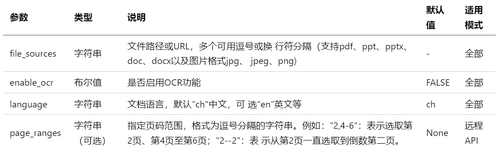

Cherry Studio 简介
Cherry Studio 是一款功能强大的多模型 AI 客户端软件，支持 Windows、macOS 和 Linux 等多平台运行，集成了 OpenAI、DeepSeek、Gemini、Anthropic 等主流 AI 云服务，同时支持本地模型运行，用户可以灵活切换不同的AI模型。
目前，MinerU 强大的文档解析能力已深度集成到 Cherry Studio 的知识库与对话交互中，为用户带来更便捷的文档处理与信息获取体验。
- Cherry Studio 官网地址：https://www.cherry-ai.com/
MinerU 在 Cherry Studio 中的使用方法
进入 Cherry Studio 设置
a. 打开 Cherry Studio 应用程序
b. 点击左下角的"设置"按钮，进入设置页面
c. 在左侧菜单中，选择"MCP 服务器"
在右侧的 MCP 服务器配置界面中，您可以看到已有的 MCP 服务器列表。点击右上角的"添加服务器"按钮来创建新的 MCP 服务，或者点击现有服务来编辑配置。
添加 MinerU-MCP 配置
点击"添加服务器"后，您将看到一个配置表单。请按以下步骤填写：
a. 名称：输入"MinerU-MCP"或您喜欢的其他名称
b. 描述：可选，如"文档转换为Markdown工具"
c. 类型：选择"标准输入/输出（stdio）"
d. 命令：输入 uvx
e. 参数：输入 mineru-mcp
f. 环境变量：添加以下环境变量
MINERU_API_BASE=https://mineru.net
MINERU_API_KEY=您的API密钥
OUTPUT_DIR=./downloads
USE_LOCAL_API=false
LOCAL_MINERU_API_BASE=http://localhost:8888
使用 uvx 命令可以自动处理 mineru-mcp 的安装和运行，无需预先手动安装 mineru-mcp 包。这是最简单的配置方式。
保存配置
确认无误后，点击界面右上角的"保存"按钮完成配置。保存后，MCP 服务器列表中会显示您刚刚添加的 MinerU-MCP 服务。

使用 Cherry Studio 中的 MinerU MCP
一旦配置完成，您可以在 Cherry Studio 中的对话中使用 MinerU MCP 工具。在 Cherry Studio 中，您可以使用如下提示让模型调用 MinerU MCP 工具。模型会自动识别任务并调用相应的工具。
示例 1: 使用 URL 转换文档
用户输入:
请使用 MinerU MCP 将以下 URL 的 PDF 文档转换为 Markdown 格式：https://example.com/sample.pdf
模型将执行的步骤：
模型识别这是文档转换任务，并调用 parse_documents 工具，参数为:
{"file_sources": "https://example.com/sample.pdf"}
工具处理完成后，模型会告知您转换结果。
示例 2: 转换本地文档
用户输入:
请使用 MinerU-MCP 将本地的 D://sample.pdf 文件转换为 Markdown 格式
模型将执行的步骤：
模型识别这是本地文档转换任务，调用 parse_documents 工具，参数为:
{"file_sources": "D://sample.pdf"}

示例 3: 启用 OCR 处理扫描文档
用户输入:
请使用 MinerU-MCP 将以下 URL 的扫描版 PDF 文档转换为 Markdown 格式，并启用 OCR 功能：
https://example.com/scanned.pdf
模型将执行的步骤：
模型识别这是需要 OCR 处理的文档转换任务，调用 parse_documents 工具，并启用 OCR 参数:
{"file_sources": "https://example.com/scanned.pdf","enable_ocr": true}
示例 4: 完整对话流程
以下是一个完整的对话流程示例：
用户:
我有一份学术论文的 PDF，网址是 https://arxiv.org/pdf/2303.08774.pdf，能帮我转换成 Markdown 格式吗？
模型:
我可以帮您将这份学术论文转换为 Markdown 格式。我将使用 MinerU-MCP 工具来处理这个任务。
[模型调用 parse_documents 工具，处理过程中...]
论文已成功转换为 Markdown 格式。转换结果如下：
# The Capacity of Diffusion Models to Memorize and Generate Training Data
## Abstract
Recent diffusion models can generate high-quality images that are nearly indistinguishable from real ones...
[显示论文内容...]
工具参数详解
在使用过程中，模型会根据您的指令自动选择合适的工具和参数。以下是主要工具的参数说明：
● parse_documents 工具参数

● get_ocr_languages 工具参数
无需参数，用于获取OCR支持的语言列表。
高级用法
指定语言和页码范围
用户输入:
请使用 MinerU MCP 将以下 URL 的文档转换为 Markdown 格式，只处理第 5-10 页，并指定语言为中文：https://example.com/document.pdf
模型会使用 parse_documents 工具，并设置 language 参数为 "ch"，page_ranges 参数为 "5-10"。
批量处理多个文档
用户输入:
请使用 MinerU-MCP 将以下多个 URL 的文档转换为 Markdown 格式：
https://example.com/doc1.pdf
https://example.com/doc2.pdf
https://example.com/doc3.pdf
模型会调用 parse_documents 工具，并将多个 URL 以逗号分隔传入 file_sources 参数。
注意事项
● 当设置 USE_LOCAL_API=true 时，使用本地配置的API进行解析
● 当设置 USE_LOCAL_API=false 时，会使用 MinerU 官网的API进行解析
● 处理大型文档可能需要较长时间，请耐心等待
● 如果遇到超时问题，请考虑分批处理文档或使用本地API模式
常见问题与解决方案
无法启动 MCP 服务
问题：运行 uv run -m mineru.cli时报错。
解决方案：
● 确保已激活虚拟环境
● 检查是否已安装所有依赖
● 尝试使用 python -m mineru.cli命令替代
文件转换失败
问题：文件上传成功但转换失败。
解决方案：
● 检查文件格式是否受支持
● 确认API密钥是否正确
● 查看MCP服务日志获取详细错误信息
文件路径问题
问题：使用 parse_documents 工具处理本地文件时报找不到文件错误。
解决方案：请确保使用绝对路径，或者相对于服务器运行目录的正确相对路径。
MCP 服务调用超时问题
问题：调用 parse_documents 工具时出现 Error calling tool 'parse_documents': MCP error -32001: Request timed out 错误。
解决方案：这个问题常见于处理大型文档或网络不稳定的情况。在某些 MCP 客户端（如 Cursor）中，超时后可能导致无法再次调用 MCP 服务，需要重启客户端。最新版本的 Cursor 中可能会显示正在调用 MCP，但实际上没有真正调用成功。建议：
● 等待官方修复：这是Cursor客户端的已知问题，建议等待Cursor官方修复
● 处理小文件：尽量只处理少量小文件，避免处理大型文档导致超时
● 分批处理：将多个文件分成多次请求处理，每次只处理一两个文件
● 增加超时时间设置（如果客户端支持）
● 对于超时后无法再次调用的问题，需要重启 MCP 客户端
● 如果反复出现超时，请检查网络连接或考虑使用本地 API 模式